COCO + Data Hub · Chứng nhận xuất xứ hàng hoá (C/O)
Tài liệu hướng dẫn sử dụng
Hướng dẫn sử dụng hệ thống CO + Data Hub
Cẩm nang từng bước cho nhân viên lập hồ sơ C/O: chuẩn bị dữ liệu nền trên Data Hub
(danh mục, định mức BOM, tờ khai) rồi lập và xuất hồ sơ C/O theo năm bước trên CO.
Dữ liệu minh hoạ dùng công ty hư cấu Demo Furniture Co. — không phải dữ liệu khách hàng thật.
Mỗi hướng dẫn có ảnh chụp thật với khung đỏ và số thứ tự chỉ đúng chỗ cần bấm —
số trên ảnh khớp với số của các bước bên cạnh.
🗄️
Data HubDanh mục · BOM · Tờ khai (nguồn dữ liệu)
📋
CO (Barry CO)Lập & xuất hồ sơ C/O 5 bước
Không tìm thấy hướng dẫn phù hợp. Thử từ khoá khác.
1
Tổng quan
Hai hệ thống tách biệt nhưng nối với nhau. Đọc mục này trước để hiểu dữ liệu đi từ đâu đến đâu.
1.1
Hai hệ thống, một luồng công việc
Hệ thống
Vai trò
Ai dùng
Data Hub
Kho dữ liệu nền dùng chung: danh mục NVL/SP, định mức (BOM), tờ khai hải quan (BCCT). Đây là nguồn sự thật về dữ liệu.
Người chuẩn bị / chuẩn hoá dữ liệu
CO (Barry CO)
Nơi lập và xuất hồ sơ C/O theo 5 bước. CO đọc dữ liệu từ Data Hub, không tự nhập lại.
Nhân viên làm C/O
Mỗi loại dữ liệu Data Hub nuôi một tính năng CO. Thiếu ô trái → hỏng ô phải (xem bảng xử lý sự cố c2).
Nguyên tắc quan trọng. Muốn một công ty làm được C/O trên CO thì dữ liệu nền của công ty đó phải có sẵn trong Data Hub trước (danh mục, BOM, tờ khai). Phần A dưới đây hướng dẫn nạp dữ liệu đó; Phần B là nghiệp vụ hằng ngày trên CO.
1.2
Thứ tự nạp dữ liệu (làm đúng thứ tự)
Tạo công ty + chọn mode mã (A2) — không đổi được sau khi tạo.
Nạp Danh mục NVL/SP (A3) — nền của mọi mã, phải nạp trước BCCT và BOM.
Nạp Bảng Quy Đổi mã (A6) — chỉ khi mã nội bộ khác mã hải quan (mode ≠ "Mã trùng"). Phải có trước khi flatten BOM để mã lô khớp mã BOM.
Nạp BCCT / tờ khai (A7) — cho tồn CO + đơn giá (tờ khai nhập) và sản phẩm xuất (tờ khai xuất).
Nạp BOM + flatten (A8) — định mức để tính LVC.
Sang CO: Refresh tồn CO 1 lần (B2) — vật chất hoá tồn từ BCCT.
Nạp sai thứ tự → các dòng chưa khớp mã (unresolved) trông như lỗi. Nạp đúng thứ tự trên. Riêng bước nạp cần tài khoản có quyền sửa công ty (can_edit_client); tài khoản chỉ-xem không làm được Phần A.
A
Data Hub — chuẩn bị dữ liệu nền
Từ công ty trống đến khi đủ dữ liệu cho CO: tạo công ty → nạp danh mục → (quy đổi) → BCCT → BOM. Mỗi lần nạp đi qua cổng map cột → xem trước → xác nhận.
A1
Đăng nhập Data Hub
Nhập email tài khoản.
Nhập mật khẩu.
Bấm Đăng nhập.
Địa chỉ Data Hub: https://ttdatahub.tinsu.ai
Đăng nhập Data Hub
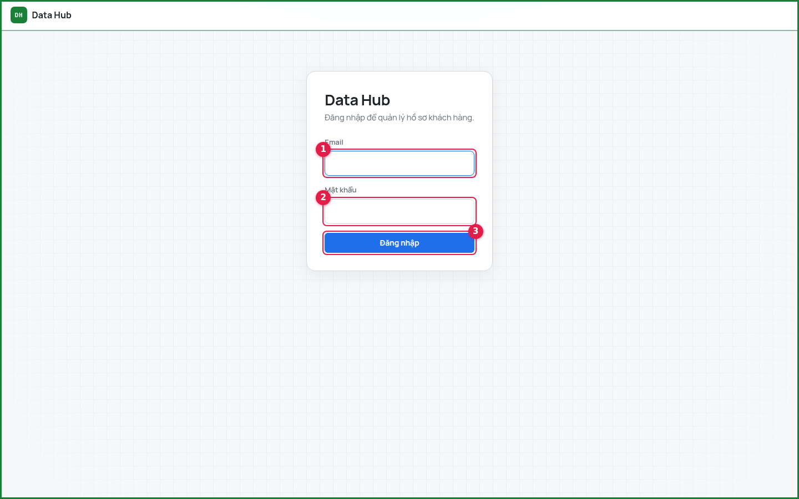
Khung đỏ 1·2·3 khớp bước 1, 2, 3.
A2
Chọn công ty (hoặc thêm mới)
Bấm vào công ty để vào không gian làm việc. Gõ ô tìm kiếm để lọc nhanh.
Chưa có công ty? Bấm + Thêm khách hàng → sang A2b.
Danh mục khách hàng
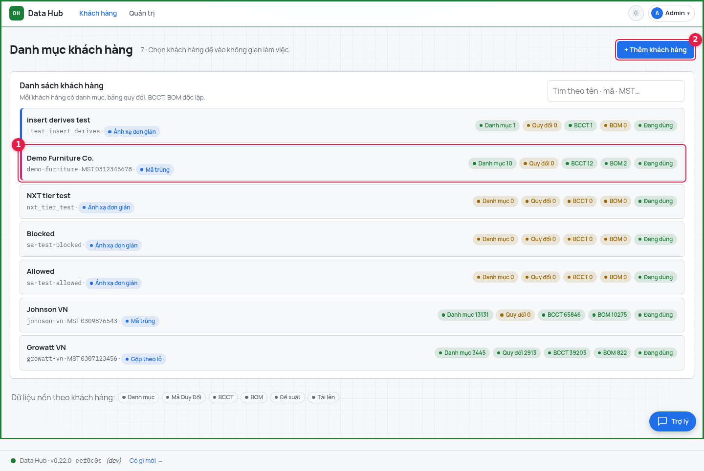
Mỗi công ty có danh mục, Quy đổi, BCCT và BOM độc lập.
Các huy hiệu bên phải mỗi công ty cho biết độ đầy đủ dữ liệu: Danh mục · Quy đổi · BCCT · BOM và trạng thái Đang dùng. Công ty mới sẽ là 0 · 0 · 0 · 0 cho tới khi nạp xong Phần A.
A2b
Tạo công ty mới + chọn mode khớp mã
Tên khách hàng (bắt buộc). Không có ô mã — mã tự sinh từ tên.
Mã số thuế (tuỳ chọn).
Chế độ khớp mã — chọn cách Hub dịch giữa mã nội bộ và mã hải quan. Không đổi được sau khi tạo.
Bấm Tạo mới.
Thêm khách hàng mới
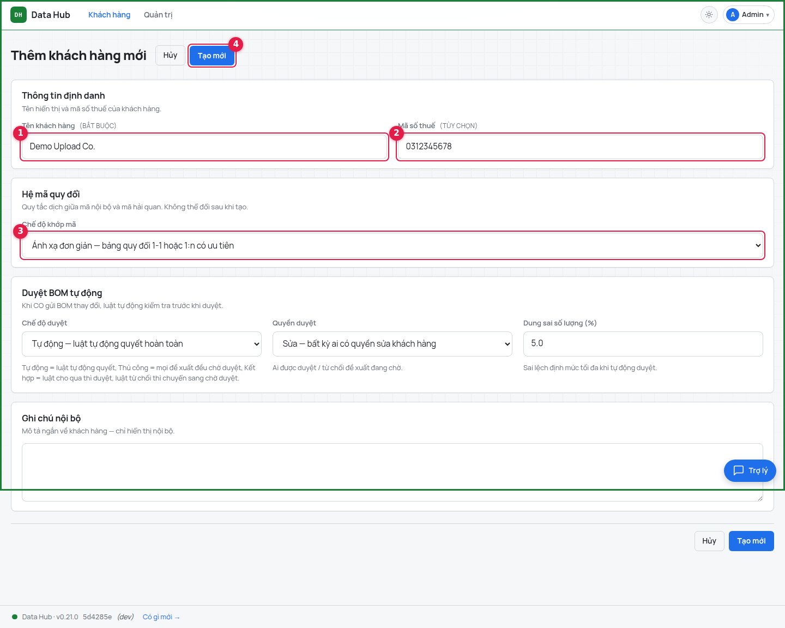
Khung đỏ 1·2·3·4 khớp Tên, MST, Chế độ khớp mã, nút Tạo mới.
Chế độ khớp mã
Khi nào dùng
Mã trùng (identity)
Mã nội bộ = mã hải quan. Không cần bảng Quy đổi (bỏ qua A6).
Ánh xạ đơn giản
Mã khác nhau, tra theo bảng Quy đổi 1-1 / 1-n. Cần nạp Quy đổi (A6).
Gộp theo lô
Nhiều mã nội bộ gộp về một mã HQ theo lô. Cần Quy đổi (A6).
Chọn sai mode làm mã NVL không resolve → BOM/tồn không khớp mà không báo lỗi rõ. Vì không đổi được sau khi tạo, chọn đúng ngay từ đầu (theo GLOSSARY của khách). Đặt mode cần quyền can_edit_client_technical.
A3
Thanh tab & nơi nạp dữ liệu
Thanh tab — chuyển giữa: Tổng quan · Danh mục (Danh mục vật tư + Mã Quy Đổi) · Hải quan (BCCT + Tờ khai) · Quyết toán · BOM · Tải lên · Cấu hình.
Việc nạp nằm ở từng tab domain (Danh mục / Mã Quy Đổi / Hải quan → BCCT / BOM), mỗi tab có nút "Tải lên …" riêng.
Tổng quan & thanh tab
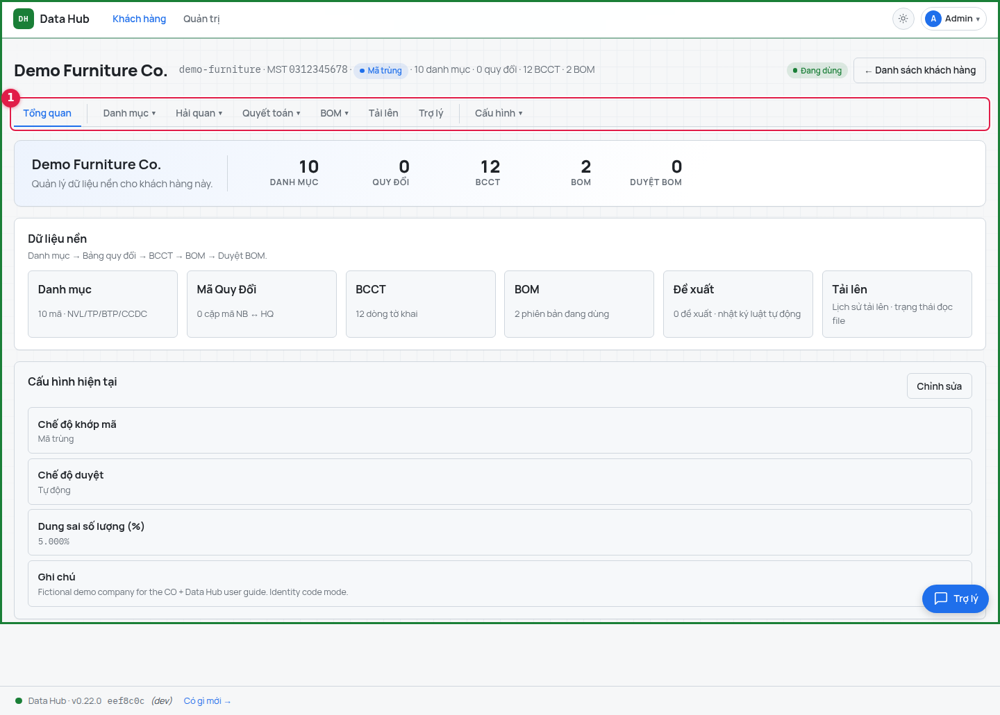
Nạp dữ liệu ở từng tab domain, không phải ở tab "Tải lên".
Tab "Tải lên" KHÔNG phải nơi nạp — nó chỉ là lịch sử/kiểm tra các lần nạp (lọc theo module, xem trạng thái parse, xoá file lỗi). Xem A9.
A4
Nạp Danh mục NVL / SP
Tab Danh mục → bấm Tải lên Excel.
Chọn file .xlsx / .xls (cột: Mã HQ · Mã NB · Tên · Loại NVL/TP/BTP · ĐVT · HS).
Tick "Đây là danh sách đã đăng ký với HQ" nếu đúng; bỏ trống nếu chỉ là danh mục nội bộ.
Soát dòng sẽ nạp → Lưu N dòng (hoặc Reject để bỏ).
Cổng map → xem trước → xác nhận này chung cho cả 4 luồng nạp (danh mục, quy đổi, BCCT, BOM). Nếu Hub tự đoán chắc chắn thì bỏ qua bước map, vào thẳng xem trước.
A6
Nạp Bảng Quy Đổi mã (chỉ khi cần)
Tab Danh mục → Mã Quy Đổi → bấm Tải lên BQD.
Chọn file .xlsx hai cột: Mã nội bộ ↔ Mã hải quan (lặp dòng để gán 1-n).
Qua cổng map → xem trước → Lưu (như A5).
Mã Quy Đổi → Tải lên BQD
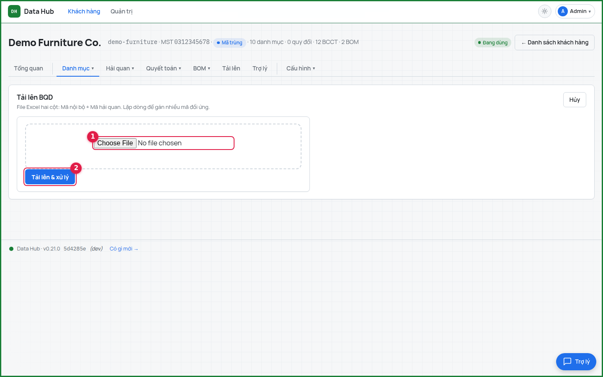
Khung đỏ 1·2 khớp chọn file, nút Tải lên.
Bỏ qua bước này nếu công ty ở mode Mã trùng (identity). Với mode Ánh xạ / Gộp theo lô, thiếu bảng Quy đổi thì mã lô nhập không khớp mã BOM → tồn không bind được, LVC không tính ra.
A7
Nạp BCCT / tờ khai
Tab Hải quan → BCCT → bấm Tải lên BCCT.
Chọn một file .xlsx (mỗi lần một file; nạp nhiều kỳ = tải lần lượt, Hub cộng dồn).
Xem trước có diff so với kho cũ → tick confirm_diffs / confirm_orphans nếu có thay đổi giá/số lượng → Lưu.
Hải quan → Tải lên BCCT
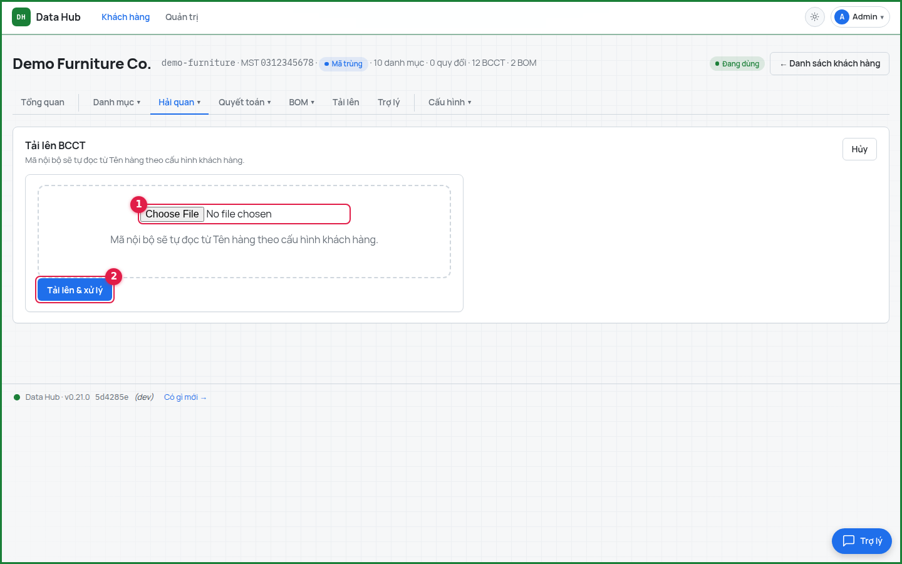
Khung đỏ 1·2 khớp chọn file, nút Tải lên.
Ở trang xem trước BCCT
Nghĩa
confirm_diffs
Một ô tick cho tất cả dòng đổi — xác nhận ghi đè giá/số lượng. Không tick: giữ giá trị cũ, dòng mới vẫn được thêm.
confirm_orphans
Xoá mềm dòng "kho có, file mới không có" (chỉ trong phạm vi các tờ khai xuất hiện trong file).
Gate đơn vị tính (UoM)
Còn ĐVT khác họ chưa xác nhận → nút Lưu bị khoá tới khi tick xác nhận.
Tờ khai nhập (E11) → tồn CO + đơn giá NVL không xuất xứ. Tờ khai xuất (E42) → sản phẩm nào được khai C/O. Thiếu BCCT thì CO refresh tồn ra rỗng và "Tạo hồ sơ" theo số tờ khai xuất không ra sheet.
Cảnh báo giá/tỷ giá không chặn Lưu; nhưng gate ĐVT khoá nút Lưu — đây là lý do hay gặp khi "sao nút Lưu bị mờ". Cột giá phân biệt "đơn giá tính thuế" (VND) ≠ "đơn giá" (nguyên tệ). Sheet thiếu cả số tờ khai lẫn ngày sẽ bị bỏ qua cả sheet. BCCT auto-map chắc chắn thì bỏ preview, nạp thẳng.
A8
Nạp BOM (định mức) + flatten
Tab BOM → bấm Tải lên BOM.
Để Kiểu phân tích = Tự động phát hiện (hoặc chọn profile nếu biết).
Chọn file .xlsx → Tải lên.
Soát bảng mẫu SP × NPL ở xem trước → Lưu. BOM nhiều cấp → thêm bước xem trước flatten → Xác nhận.
Dropdown có ~8 profile (auto · manual_flat · sheet_per_product · sap_indented_walk · technical_raw · technical_flatten…). Chỉ manual_flat có bước map cột; các profile khác auto-parse. Auto thất bại → báo "Không có parser phù hợp, chọn parser thủ công". Có form phụ "Đặt parser mặc định cho client".
Việc nổ (flatten) BOM nhiều cấp làm trong app ở bước xác nhận, không nổ tay trong Excel. Bước flatten-preview có các quyết định phải tick — không tick là chặn Lưu (dual-source, BCCT vs BOM con, quy đổi ĐVT…). Preview báo "cấu trúc nhiều cấp nhưng đang lưu phẳng — sẽ KHÔNG sinh BOM phân rã" thì nên reject. CO chỉ dùng BOM flat đầy đủ (manual_flat).
A9
Kiểm tra dữ liệu đã nạp & lịch sử
Mở lại các tab Danh mục, Hải quan → BCCT, BOM để soát dữ liệu vừa nạp (tên, số lượng, mã HS, định mức từng dòng).
Tab Tải lên — xem lịch sử mọi lần nạp: lọc theo module (danh mục / quy đổi / BCCT / BOM), trạng thái parse, xoá file lỗi để nạp lại.
Tab Danh mục (đã nạp)
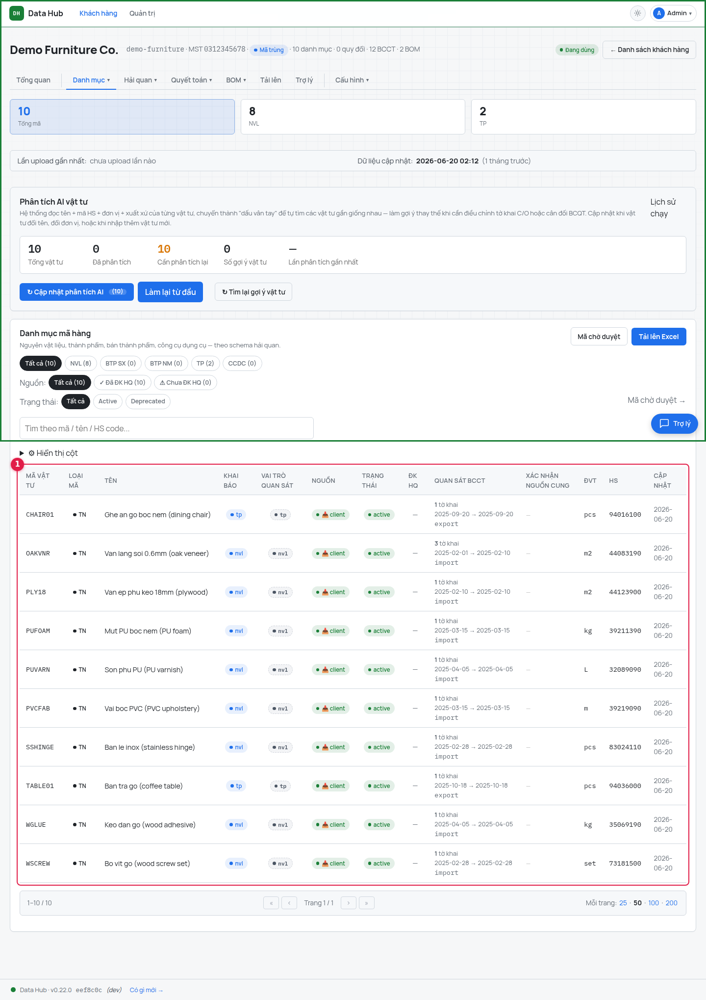
Danh mục — tên, ĐVT, HS, declarability.Tab Tải lên — lịch sử
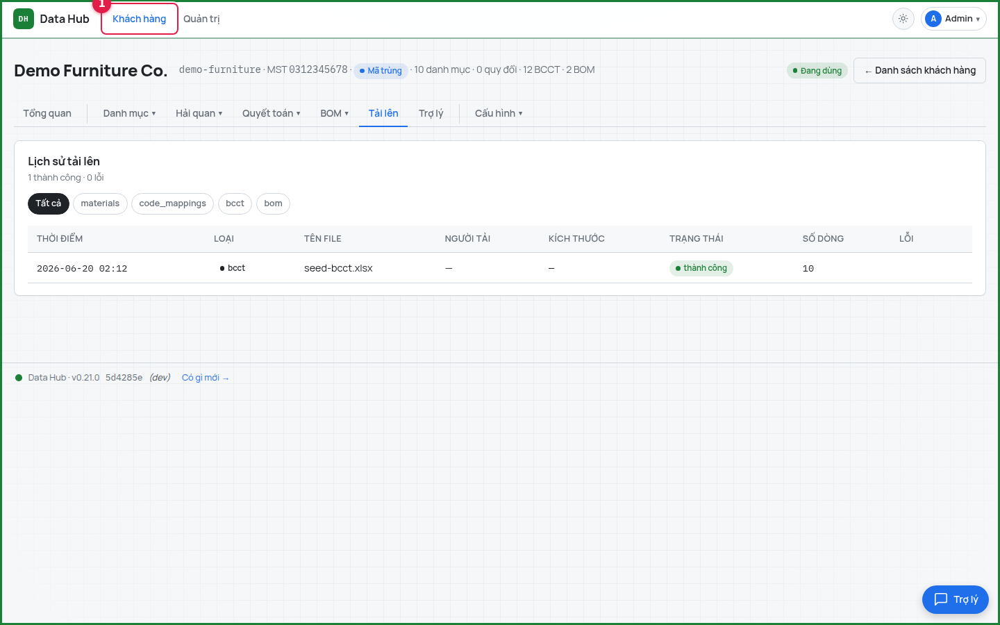
Chỉ để kiểm tra / xoá file lỗi — không nạp ở đây.
Xem lại ở
Ảnh
BCCT (tờ khai nhập/xuất)
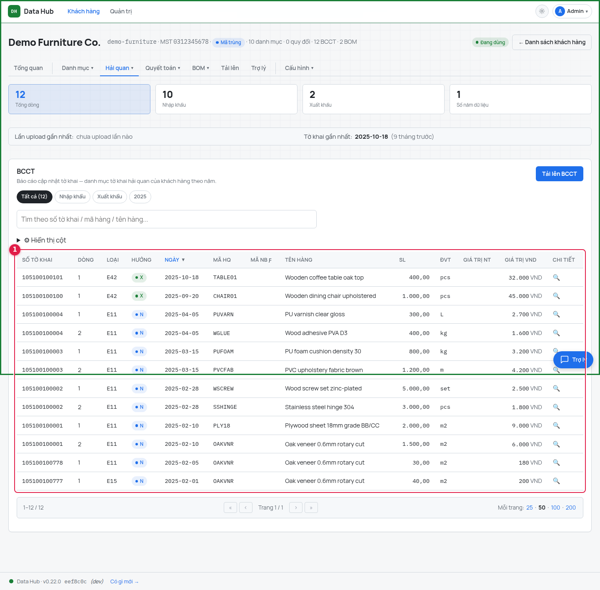
BOM (bản lưu + chi tiết định mức)
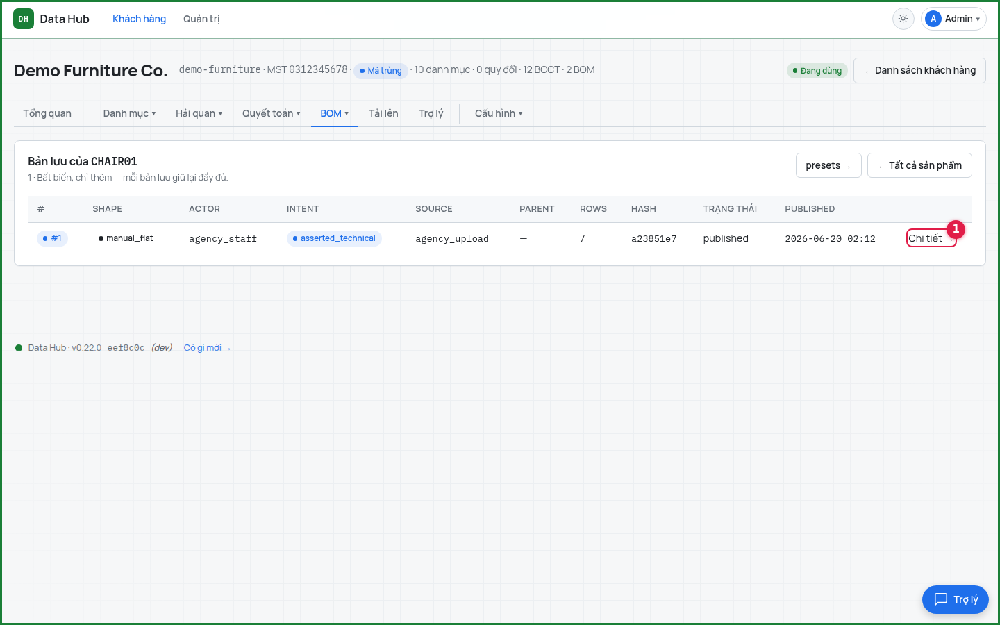
Khối "Phân tích AI vật tư" ở tab Danh mục thống kê độ phủ declarability (customs_relevance). Vật tư chưa phân loại vẫn được giữ lại trên bảng kê CO (không tự loại).
A10
Đề xuất BOM (từ CO gửi lên)
Khi nhân viên CO sửa/đề xuất BOM mới cho một hồ sơ, đề xuất hiện ở tab Quyết toán → Đề xuất để người có quyền duyệt.
Quyết toán → Đề xuất
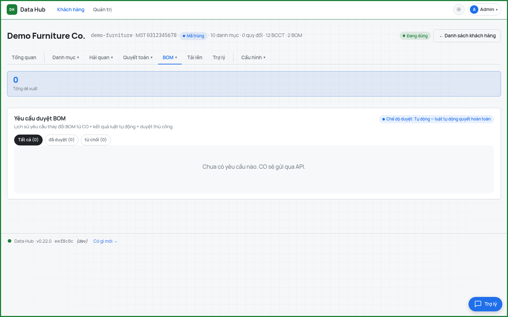
Đề xuất BOM chờ duyệt.
B
CO — lập hồ sơ C/O theo 5 bước
Từ chọn công ty và chuẩn bị tồn, qua bảng kê tính LVC, đến chốt và xuất hồ sơ C/O.
B1
Vào CO & chọn công ty
Bấm vào công ty để mở không gian làm việc.
Địa chỉ CO: https://barry-co.tinsu.ai
Danh sách đọc trực tiếp từ Data Hub — công ty mới thêm bên Data Hub tự xuất hiện ở đây.
Trang Công ty (CO)
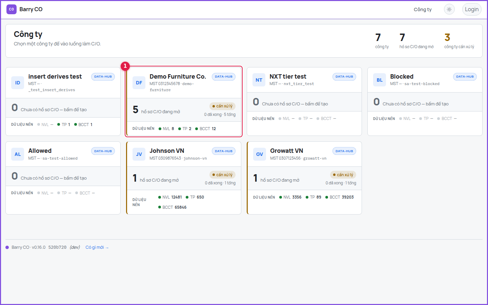
CO đọc danh sách công ty trực tiếp từ Data Hub.
B2
Chuẩn bị tồn CO (làm 1 lần cho công ty mới)
Vào tab Tồn CO. Đọc chip đồng bộ: ✓ Đồng bộ · ⚠ Lệch N dòng BCCT — nên refresh · Chưa có snapshot.
Bấm Refresh từ Data Hub để vật chất hoá (materialize) tồn từ tờ khai nhập BCCT (~10s với client lớn).
Đây là điều kiện để bảng kê có đơn giá và số lượng tồn để trừ lùi.
Lịch sử lô (mỗi dòng): sự kiện Nhập · Chốt CO (Đang giữ) · Mở chốt (Đã nhả) · ⚠ vượt tồn.
Tồn CO ≠ tồn kho vật lý — đây là tồn để trừ lùi C/O, dẫn xuất từ tờ khai nhập.
Tab Tồn CO
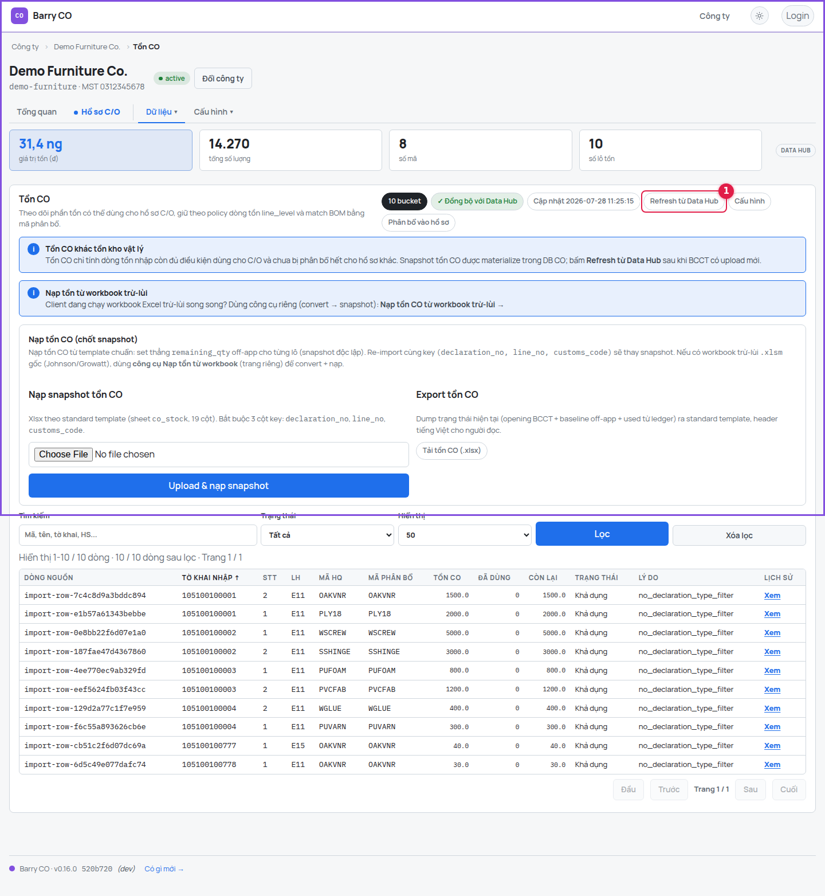
Sau refresh, bảng tồn hiển thị từng lô NK (số tờ khai · mã NVL · số lượng · còn lại).
Công ty mới phải refresh tồn CO 1 lần trước khi Tính bảng kê. Nếu không, NVL sẽ thiếu đơn giá và không chốt được. Tồn được lưu phía CO và chỉ cần refresh lại khi Data Hub có tờ khai mới.
Refresh dựng tồn từ BCCT; Chốt giữ (trừ) tồn của lô; Mở chốt nhả tồn về khả dụng.
B3
Tạo hồ sơ C/O
Vào tab Hồ sơ C/O → bấm + Tạo hồ sơ.
Nhập Số tờ khai xuất (vd 105100100100, 105100100101) — hệ thống lấy đúng các sản phẩm trong những tờ khai này làm sheet bảng kê.
Nhập Thị trường (vd "Hàn Quốc") — quyết định form C/O được gợi ý.
Bấm Tạo hồ sơ.
Danh sách hồ sơ
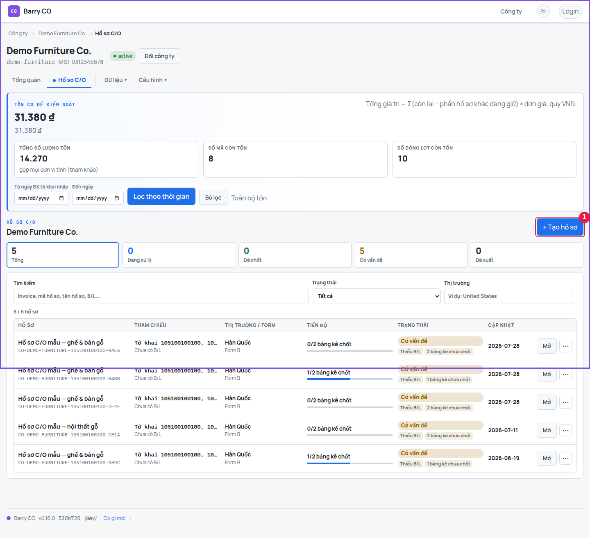
Bấm + Tạo hồ sơ để mở modal.Modal tạo hồ sơ
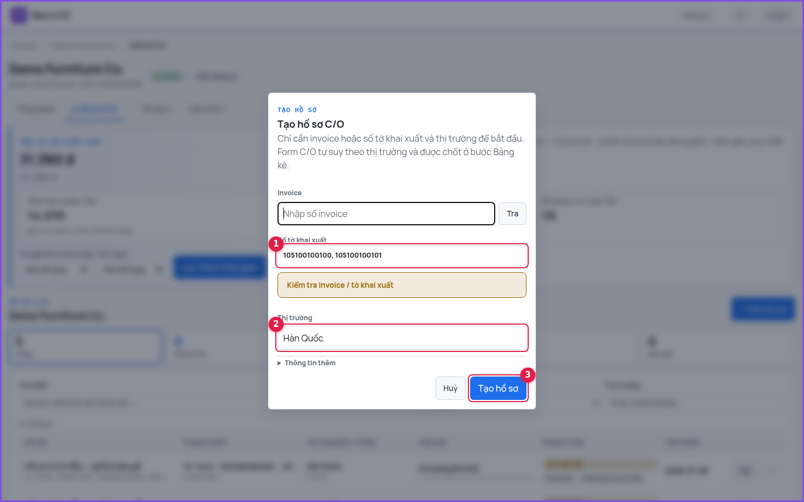
Khung đỏ 1·2·3 khớp Số tờ khai xuất, Thị trường, nút Tạo hồ sơ.
Nhập số tờ khai xuất hoặc invoice là đủ để hệ thống tự nạp ngữ cảnh BCCT và gợi ý form. Tên hồ sơ là tuỳ chọn (mục Thông tin thêm).
B4
Bước 1 — Lô hàng
Thanh 5 bước ở trên cùng cho biết trạng thái từng bước. Ở đây có thể bổ sung số invoice, số B/L, kiểm tra tờ khai xuất và thị trường.
Bước 1 · Lô hàng
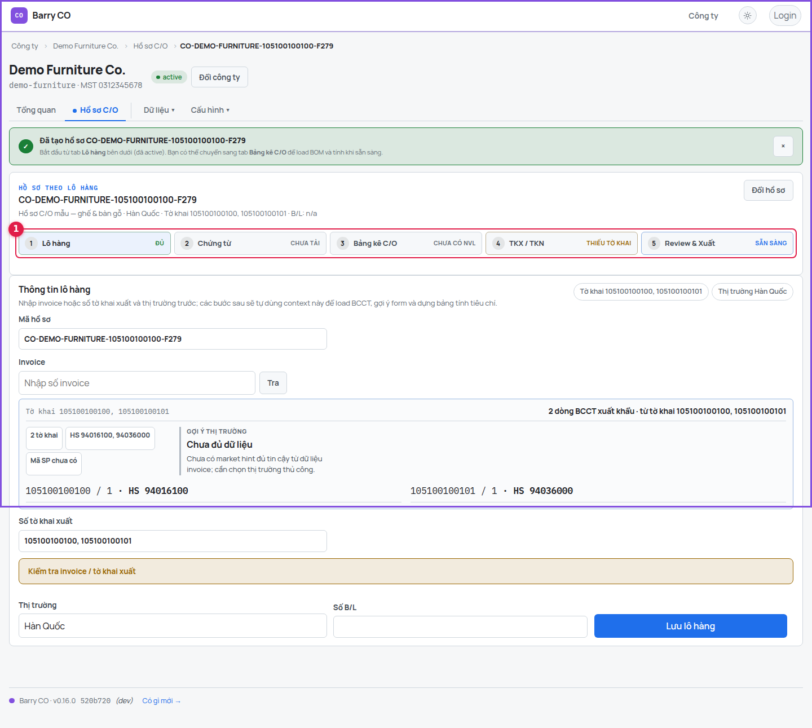
Thanh tiến trình 5 bước theo suốt hồ sơ.
B5
Bước 2 — Chứng từ
Kéo-thả tải lên bộ chứng từ: Invoice, Bill of Lading, Packing List và chứng từ bổ sung.
Có thanh tiến độ "bắt buộc N/3".
Bước 2 · Chứng từ
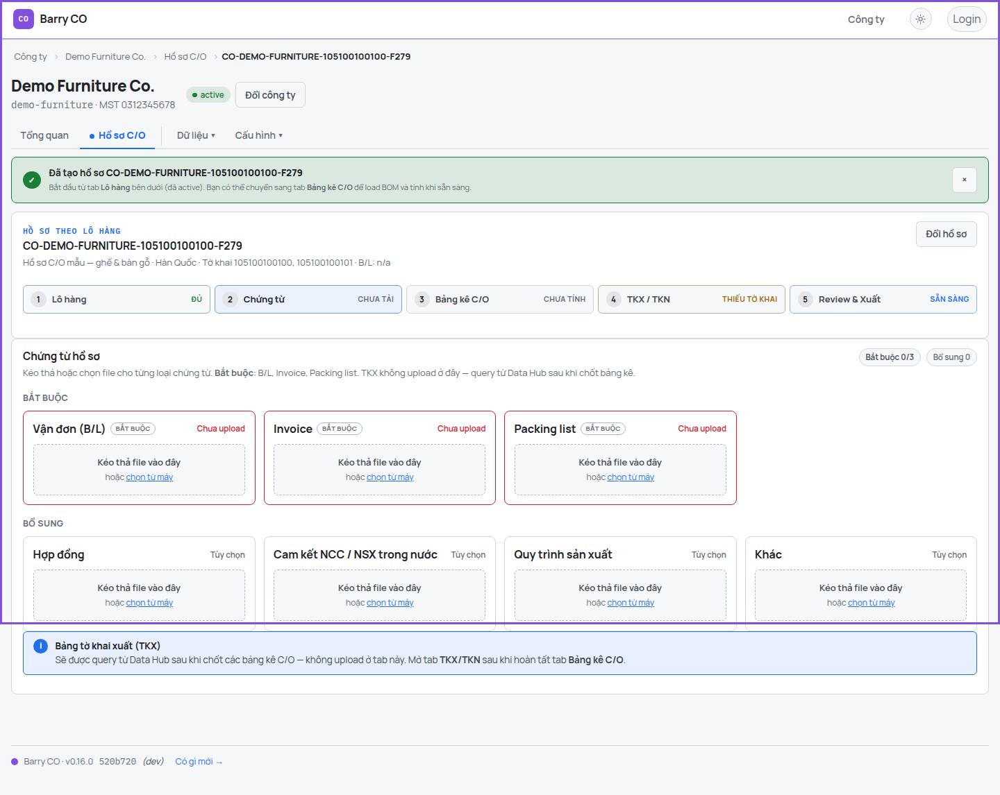
Kéo-thả để tải lên bộ chứng từ.
B6
Bước 3 — Bảng kê C/O (quan trọng nhất)
Mở một sheet sản phẩm, bấm Load BOM để nạp cấu trúc định mức (NVL) từ Data Hub vào bảng kê.
Bấm Tính bảng kê — hệ thống phân bổ tồn CO, lấy đơn giá NVL không xuất xứ và tính LVC.
Đọc thanh cấu hình: HS, FOB, VNM (trị giá NVL không xuất xứ), LVC % / ngưỡng, kết quả CTC. Đạt ngưỡng thì được bật nút Chốt.
Load BOM
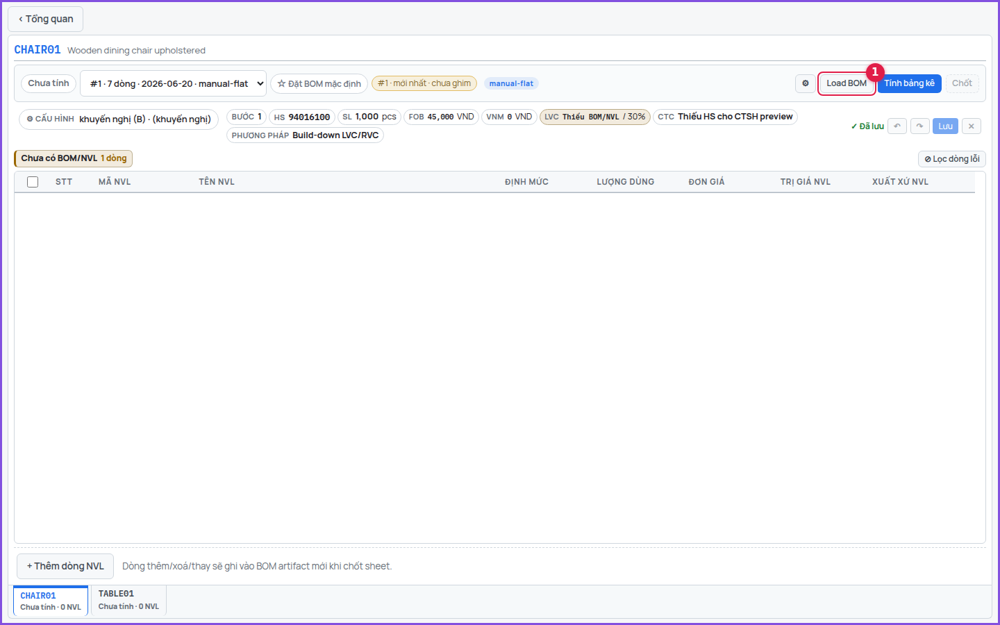
Bước 1: bấm Load BOM để nạp định mức vào sheet.Tính bảng kê
Mỗi sản phẩm trong tờ khai xuất là một "sheet". Bảng liệt kê từng NVL với định mức, lượng dùng, đơn giá, trị giá và nhãn xuất xứ ("Không xuất xứ" = tính vào VNM). Dòng con "Dòng tồn N … tồn trước → còn" cho biết lô nào bị trừ.
Thanh cấu hình — đọc gì
Ý nghĩa
FOB
Trị giá xuất xưởng sản phẩm — mẫu số của LVC.
VNM
Tổng trị giá NVL không xuất xứ (nguyên liệu ngoại) — phần trừ khỏi FOB.
LVC % / ngưỡng
Hàm lượng giá trị khu vực đạt được / ngưỡng tối thiểu của form. Đạt → bật Chốt.
CTC
Tiêu chí chuyển đổi mã HS (CTH/CTSH) — đạt / không.
Phương pháp Build-down
LVC = (FOB − VNM)/FOB. Nhập chi phí xuất xưởng (lương, khấu hao, CP SX chung, vận chuyển…) ở panel để tăng phần nội địa; Lợi nhuận (V) = FOB − chi phí nếu để trống.
Ba nghĩa "xuất xứ" trên bảng kê
Là gì
Cột (9) nước xuất xứ NVL
Sự thật (free-text) — NVL đến từ nước nào.
Cột (7)/(8) trị giá có / không có xuất xứ FTA
Phán định (tiền) — vào tử số LVC hay vào VNM. NVL Việt Nam muốn vào cột (7) cần PL X / Cam kết NCC (nộp ở Bước 2).
Tiêu chí
Thuộc sản phẩm + form (WO/CTC/RVC/LVC…), không thuộc từng NVL.
Thao tác quan trọng ở Bước 3 (thanh Review + lưới NVL): "Xử lý tuần tự" (wizard tính→chốt từng sheet) · "Tính tồn tất cả" · "Chốt tất cả" · "▦ Tổng hợp NVL thiếu tồn"; đổi thứ tự sheet = đổi thứ tự trừ tồn; chọn & ghim ★ phiên bản BOM; ⚙ cấu hình (tiêu chí · ngưỡng % · tiền tệ · tối ưu ↑/↓ LVC); sửa định mức + "+ Thêm dòng NVL", undo/redo Ctrl+Z / Ctrl+Y sống qua cả lần Lưu, tự lưu khi ngừng thao tác; sửa BOM rồi "Lưu BOM mới" để đề xuất về Data Hub (→ A10).
B7
NVL thay thế (khi thiếu tồn)
Nếu một NVL thiếu tồn, bấm tìm NVL thay thế. Modal gợi ý ứng viên (ưu tiên đơn giá thấp để tăng LVC).
Nếu Data Hub chưa có gợi ý precomputed, CO tự dò heuristic theo mã HS (không phụ thuộc Data Hub).
Modal NVL thay thế
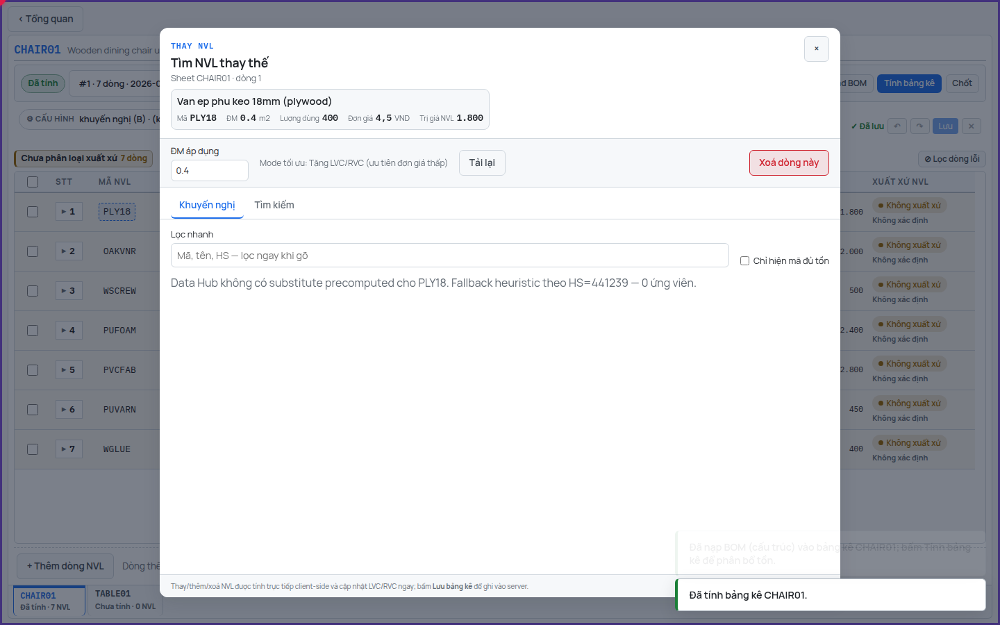
Ứng viên thay thế, ưu tiên đơn giá thấp.
Ưu tiên lịch sử thay thế. Những mã đã từng dùng để thay NVL này trong các hồ sơ đã chốt trước đó được ghim lên đầu danh sách kèm huy hiệu ↺ đã từng thay ·N. Huy hiệu xuất hiện sau lần thay-và-chốt đầu tiên.
B8
Chốt sheet
Khi sheet đạt và đủ đơn giá, bấm Chốt để khoá. Sheet đã chốt hiển thị 🔒 Chốt và trừ tồn CO (ghi claim).
Cần sửa lại thì bấm Mở chốt.
Sheet đã chốt
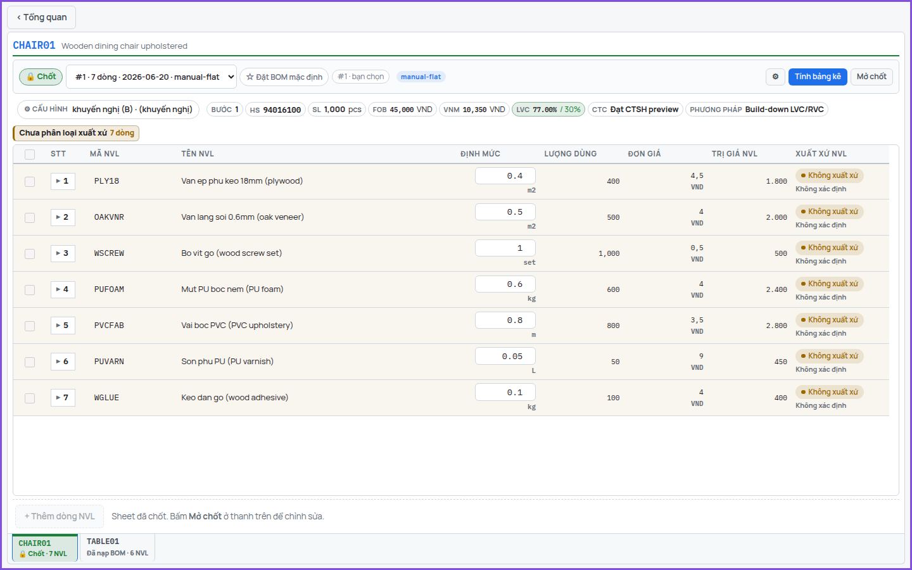
Sheet 🔒 Chốt — nút chuyển thành Mở chốt.Tiến độ chốt
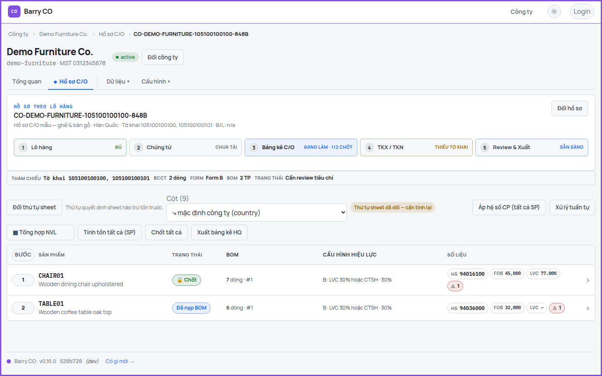
Bảng tổng cho thấy tiến độ (vd 1/2 chốt): một sheet 🔒, một sheet đang làm.
Chốt theo thứ tự. Các sheet được chốt tuần tự (sheet sau đòi sheet trước đã chốt) để trừ tồn nhất quán. Mở chốt nhả tồn đã trừ về sổ (soft release); chốt lại sẽ trừ lại theo tồn hiện tại.
Vòng đời một sheet. Nút Tính/Chốt/Mở chốt bật-tắt theo trạng thái này — xem bảng dưới.
Nút mờ / thông báo
Vì sao
Xử lý
Chốt mờ — "Cần chốt các bước trước: X…"
Sheet trước chưa chốt (chốt tuần tự)
Chốt các sheet trước theo thứ tự
Chốt mờ — "còn NVL thiếu tồn / không có lô nhập khớp"
NVL chưa khớp tồn / tờ khai nhập
Bổ sung chứng từ (khớp tờ khai nhập hoặc hoá đơn VAT) rồi tính lại — không dùng giá ước tính
Chốt mờ — "còn NVL thiếu đơn giá"
NVL không có đơn giá
Bổ sung đơn giá / khớp tồn rồi Tính lại
Chốt mờ — "Chỉ chốt được sau khi đã tính"
Sheet chưa Tính
Bấm Tính bảng kê
Mở chốt mờ
Chỉ mở được từ sheet chốt sau cùng
Mở chốt các sheet sau trước
Tính mờ — "Đã tính"
Đã tính, chưa đổi gì
Sửa bảng kê → tự chuyển "Tính lại"
B9
Bước 4 — TKX / TKN (kiểm tra & tải, KHÔNG upload)
Đọc callout đếm số TKX/TKN còn thiếu file. Bước này không tải file lên — file tờ khai nằm bên Data Hub.
Thiếu file → bổ sung ở Data Hub → Tờ khai rồi quay lại.
Bảng TKN chỉ xuất hiện sau khi chốt sheet — lấy từ dòng phân bổ tồn (allocation) của các sheet đã chốt.
Khi trạng thái "Đã có" đủ, bấm Tải TKX…zip / Tải TKN…zip (link tải thẳng từ Data Hub).
Bước 4 · TKX/TKN
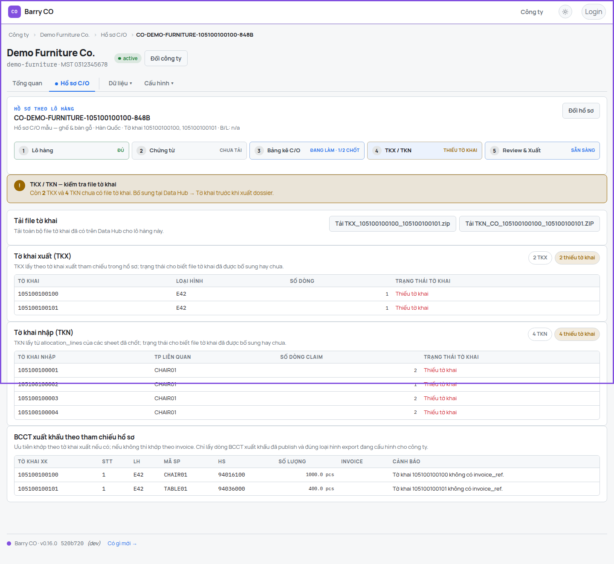
Kiểm tra trạng thái file rồi tải zip — không có upload ở bước này.
"Chưa có TKN nào" nghĩa là chưa chốt sheet — TKN chỉ sinh ra từ tồn đã trừ khi Chốt (B8). Nút tải mờ khi Data Hub chưa có file tờ khai tương ứng → bổ sung bên Data Hub.
B10
Bước 5 — Review · Đóng hồ sơ & Xuất
Chốt hết mọi sheet — chỉ khi đó nút "Đóng hồ sơ" mới bật.
Xem checklist Review: Chứng từ · Bảng kê · TKX/TKN (mục nào thiếu sẽ cảnh báo).
Bấm Đóng hồ sơ — khoá toàn bộ; sau khi đóng không sửa được bảng kê / chứng từ nữa (có bước xác nhận).
Bấm Xuất hồ sơ .zip — chạy nền, panel trạng thái cập nhật mỗi 2s. File: <mã hồ sơ>-dossier.zip.
Cần sửa lại → Mở lại hồ sơ (bỏ khoá).
Xuất bảng kê HQ (nút trên bảng tổng Bước 3, file <mã hồ sơ>-bang-ke-hq.xlsx) không cần đóng hồ sơ — lấy nhanh bảng kê bất cứ lúc nào. Chỉ bộ dossier .zip tổng hợp mới đòi Đóng hồ sơ trước (để tính đủ TKX/TKN). Bảng kê xuất ra là bản in đúng lưới web — logic đã tính ở bước Tính.
!
Lưu ý vận hành & xử lý sự cố
Những điểm hay gặp khi vận hành hằng ngày.
!
Danh sách lưu ý
Công ty mới phải refresh tồn CO 1 lần (mục B2) trước khi Tính bảng kê — nếu không, NVL sẽ thiếu đơn giá và không chốt được.
Chốt theo thứ tự: các sheet được chốt tuần tự (sheet sau đòi sheet trước đã chốt). Đây là thiết kế để trừ tồn nhất quán.
"Thiếu đơn giá / thiếu tồn" → không chốt: nếu một NVL không có đơn giá (chưa khớp tồn/tờ khai nhập), hệ thống chặn Chốt để tránh phát hành C/O sai LVC. Bổ sung đơn giá / khớp tồn rồi Tính lại.
Vật tư chưa phân loại declarability (customs_relevance rỗng) được giữ lại trên bảng kê (không tự loại rác). Việc phân loại là phía Data Hub.
CO không sửa dữ liệu nền: muốn thêm/sửa danh mục, BOM, tờ khai → làm bên Data Hub, CO sẽ đọc lại.
Guard "thiếu đơn giá / thiếu tồn" là chặn cứng ở bước Chốt và bước Xuất — không dùng giá ước tính. Đây là để bảo đảm C/O phát hành có LVC đúng.
Báo lỗi (v0.16). Thao tác lỗi hiện toast tại chỗ với nội dung từ server và giữ nguyên trang; lỗi điều hướng hiện trang báo lỗi có nút Quay lại (không còn JSON thô). Tính năng mới xem mục "Có gì mới" trong app.
?
Màn hình trống → thiếu dữ liệu Phần A
Triệu chứng trên CO
Nguyên nhân thường gặp
Xử lý
Danh sách hồ sơ / sheet trống, "Tạo hồ sơ" theo số tờ khai xuất không ra sản phẩm
Chưa nạp BCCT (không có tờ khai xuất)
Nạp BCCT (A7)
Load BOM không ra gì / "Chưa có BOM"
Chưa nạp BOM, hoặc BOM "nông" chưa flatten, hoặc mã không resolve (sai mode/thiếu Quy đổi)
Refresh tồn CO xong vẫn rỗng / mọi NVL "thiếu đơn giá"
Chưa nạp BCCT nhập (E11)
Nạp BCCT (A7) rồi refresh tồn (B2)
Bảng kê có dòng NVL không tên / mã lạ
Chưa nạp Danh mục, hoặc mã lô không khớp mã BOM (thiếu Quy đổi)
Nạp Danh mục (A4); nạp Quy đổi (A6)
Nạp file bên Data Hub báo lỗi parse / không thấy dữ liệu xuất hiện
Sai cột/định dạng, hoặc file đang chờ xác nhận ở cổng map
Vào tab Tải lên (A9) xem trạng thái; xoá file lỗi, nạp lại; hoàn tất cổng map → Lưu (A5)
Phân quyền. Nạp dữ liệu (Phần A) cần tài khoản có quyền can_edit_client; đặt mode khớp mã cần can_edit_client_technical. Tài khoản chỉ-xem không làm được Phần A — nhờ người có quyền hoặc quản trị viên.